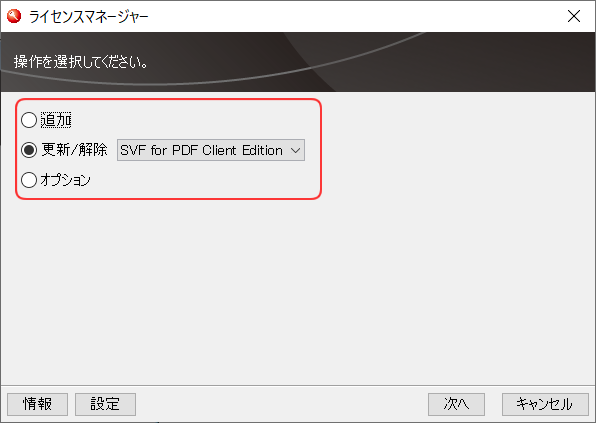

2.3. アクティベーション
ここでは、製品のアクティベーションの概要について説明します。
アクティベーションとは
「アクティベーション」とは、製品が正規のライセンスで使用されていることを確認する手続きのことです。
正しいアクティベーションキーを入力し、アクティベーションサーバーに認証されると、製品が使用可能になります。
参考
アクティベーションした後に、製品のインストール先のコンピューターを変更する場合やハードウェア構成を変更する場合は、その前にいったんアクティベーションを解除します。ただし、ハードウェア構成の変更がメモリ追加などで、製品またはライセンス数が追加、削除されない場合は、アクティベーションを解除する必要はありません。
アクティベーションを解除した後に製品を使用するには、再度アクティベーションする必要があります。
アクティベーションの種類
アクティベーションには、次の2種類があります。
製品をインストールしたコンピューターを使って、インターネット経由でアクティベーションする方法です。
アクティベーションファイルを通じてアクティベーションする方法です。
製品をインストールしたコンピューターがインターネットに接続されていなくても、アクティベーションできます。
ライセンスマネージャーの起動
アクティベーションは、［ライセンスマネージャー］で行います。管理者権限を持つユーザーで起動してください。
［ライセンスマネージャー］はインストール時に自動で起動されますが、手動で起動することもできます。
［ライセンスマネージャー］の起動手順は次のとおりです。
［スタート］メニューから［SVF for PDF Client Edition］フォルダーの［ライセンスマネージャー］を起動します。
表示されるダイアログの一覧から目的の製品を選択して［次へ］ボタンをクリックします。
誤って別の製品を選択した場合は、一度ウィンドウを閉じて、再度ライセンスマネージャーを起動してください。
操作を選択します。

追加
製品のライセンスを入力してアクティベーションします。
更新/解除
製品のライセンス情報を更新、または製品のアクティベーションを解除します。
ドロップダウンリストに複数の製品が表示される場合は、更新/解除する製品を指定します。
試使用版から正規版にライセンス情報を更新する場合またはアクティベーションを解除する場合に選択します。
オプション
製品のオプションを追加/削除します。
画面上は表示されていますが、SVF for PDF Client Editionでは追加できるオプションはありません。
［次へ］ボタンをクリックします。操作に対応した画面が表示されます。
以降の手順については、各ページを参照してください。